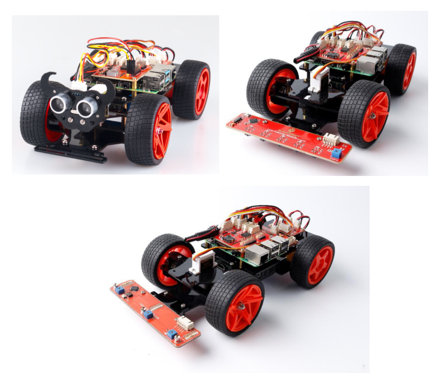

車の装備！¶
センサーモジュールのない車は、視覚や聴覚のない人と同じように武装していないため、周囲の環境を感じない。だから我々がこれからすること、車を装備させて、周囲の物を検出できるようにすることである。次に、**PiCar**を**PiCar-S**に変える。
正確にはPiCar-Sとは何か？ -------データを収集して処理する機能を車に与えるいくつかのセンサーをPiCarに装備する。PiCar**への**センサーモジュール**は、**ゲームコンソール**への**カートリッジ**である。それらはゲームの基本的なデザインに追加されるため、プレイが豊かになる。コードにも似ている。プロセッサはSunFounder_PiCarを使用して車の動作を駆動し、さまざまなモジュール（**SunFounder_Light_Follower、SunFounder_Line_Follower、SunFounder_Ultrasonic_Avoidance）に対応するコードパッケージを読み出す。
以下の対応するモジュールの説明の配線に従って、希望のセンサーモジュールを組み立てる。**トランスフォーマーを**楽しんでください！
